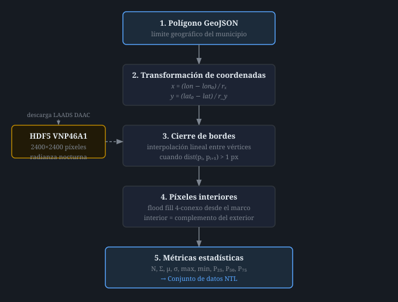

Procesamiento de Imágenes Satelitales VNP46A1 para la Estimación de Luminosidad Nocturna a Nivel Municipal
Introducción
El Producto Interno Bruto (PIB) es el principal indicador de la salud económica de una población. Su estimación a niveles de granularidad menores al nacional —como el nivel municipal en México— es una tarea compleja, debido a que el INEGI no publica el PIB municipal (PIBM) de manera periódica, lo que limita la evaluación de políticas económicas y el análisis a escala subnacional.
Una aproximación ampliamente estudiada consiste en utilizar la luminosidad nocturna captada por satélite (NTL, por sus siglas en inglés) como variable proxy del PIB. Esta relación fue establecida formalmente por Henderson et al. [1], quienes demostraron que existe una elasticidad constante entre la intensidad de la luz nocturna y el PIB, tanto en niveles como en cambios. La NTL ofrece dos ventajas fundamentales: captura la actividad económica tanto formal como informal, y está disponible de forma abierta para casi cualquier región geográfica y en frecuencia diaria.
El uso de la NTL como proxy requiere, como paso previo, un proceso de procesamiento de imágenes que permita agregar los valores de radianza de los píxeles satelitales correspondientes a cada municipio. Este documento describe en detalle dicho proceso, desarrollado para las 16 alcaldías de la Ciudad de México, Oaxaca de Juárez (Oaxaca) y Monterrey (Nuevo León), para el período 2012–2024, utilizando el producto VNP46A1 del sensor VIIRS a bordo del satélite Suomi-NPP.
Fuente de datos
Conjunto de datos Black Marble
El sensor Day/Night Band del instrumento VIIRS (VIIRS-DNB), a bordo de las plataformas satelitales Suomi National Polar-orbiting Partnership (S-NPP) y el Joint Polar Satellite System, orbita la Tierra diariamente. La NASA ha desarrollado a partir de este sensor el conjunto Black Marble (VNP46/VJ146), considerado el estado del arte para investigación con datos de luminosidad nocturna [2]. Tiene una resolución espacial de 15 arco-segundos, aproximadamente 500 m, y está disponible desde enero de 2012. Los archivos se distribuyen en formato HDF5 sobre una cuadrícula de 460 cuadrantes de 10° × 10°, identificados con la notación $hXXvYY$; el que cubre la Ciudad de México es el $h08v07$.
El conjunto publica dos productos diarios que este trabajo distingue de forma explícita, porque la elección entre ellos resultó tener más efecto sobre la serie que cualquier decisión del procesamiento geométrico.
VNP46A1 entrega la radianza tal como llega al sensor: sin corregir por iluminación lunar, nubosidad ni atenuación atmosférica, y sin ninguna bandera que indique si la observación es utilizable. Una noche completamente nublada produce un valor numérico plausible que no corresponde a luz emitida desde el suelo.
VNP46A2 entrega la misma escena tras corregir la reflectancia bidireccional lunar y la atmósfera, acompañada de Mandatory_Quality_Flag, que califica cada píxel individualmente. En la colección 2.0, el valor 0 indica alta calidad y los valores 1 a 5 distintas causas de descarte —eclipse lunar, aurora, destello especular—, mientras que 255 señala ausencia de recuperación.
El procesamiento descrito en este trabajo utiliza VNP46A2. La sección 6 cuantifica la diferencia. Las rutas de los datos de radianza dentro del archivo HDF5 son, respectivamente:
VNP46A2 HDFEOS/GRIDS/VIIRS_Grid_DNB_2d/Data Fields/DNB_BRDF-Corrected_NTL
VNP46A1 HDFEOS/GRIDS/VNP_Grid_DNB/Data Fields/DNB_At_Sensor_Radiance_500mCada matriz tiene dimensiones $2400 \times 2400$ píxeles, donde el elemento $I_{j,k}$ es la radianza en la posición $(j, k)$ del cuadrante, expresada en nW·cm⁻²·sr⁻¹. Los valores enteros requieren aplicar los atributos scale_factor y add_offset que el propio conjunto de datos declara, y descartar los que coincidan con _FillValue o queden fuera del intervalo valid_min–valid_max: omitir esa conversión deja la serie en cuentas digitales, y omitir el descarte introduce el valor de relleno en los agregados como si fuera luminosidad. El nombre de cada archivo sigue la nomenclatura:
VNP46A2.AYYYYDDD.hXXvYY.CCC.YYYYDDDHHMM
donde AYYYYDDD indica el año y día del año de adquisición (fecha juliana), hXXvYY el identificador del cuadrante, CCC la versión de la colección, y h5 el formato HDF5. Los archivos se obtienen del servidor LAADS DAAC (Level-1 and Atmosphere Archive and Distribution System Distributed Active Archive Center) de la NASA [3].
Delimitación de municipios
Los límites geográficos de los municipios se obtienen del sistema de Marco Geoestadístico del INEGI, que divide el territorio nacional en Áreas Geoestadísticas Estatales, Municipales y Básicas [4]. Los datos incluyen las coordenadas en latitud y longitud de los vértices del polígono que delimita cada municipio de interés, representados como un conjunto de pares $C = \{c_1, c_2, \ldots, c_n\}$ donde cada $c_i = (\phi_i, \lambda_i)$ es la latitud y longitud de un vértice.
Metodología de procesamiento
El procesamiento se divide en siete etapas secuenciales que transforman la imagen satelital cruda en un conjunto de estadísticas de radianza por municipio y fecha. La figura 1 ilustra el flujo completo.

Extracción de archivos HDF5
El proceso inicia con la localización y descarga del archivo HDF5 correspondiente al cuadrante, año y día requeridos desde el servidor LAADS DAAC. Dado que la colección cuenta con alrededor de 4 700 archivos por cuadrante (uno por día desde 2012), se desarrolló un mecanismo de consulta al directorio del servidor que, dado un cuadrante, año y día del año, localiza el archivo correspondiente mediante su nomenclatura y lo descarga. Una vez extraída la información necesaria de la imagen, el archivo original se elimina para no acumular almacenamiento.
Obtención de coordenadas geográficas de la imagen
Cada archivo HDF5 contiene metadatos internos que describen la posición geográfica del cuadrante. Estos metadatos incluyen dos campos de interés:
- UpperLeftPointMtrs: coordenadas del vértice superior izquierdo del cuadrante.
- LowerRightMtrs: coordenadas del vértice inferior derecho del cuadrante.
Los valores de estos campos se expresan en unidades de $10^{-6}$ grados, por lo que se dividen entre $10^6$ para obtener la latitud y longitud correspondientes. La relación entre el índice de cuadrante $(h, v)$ y las coordenadas geográficas puede verificarse con las expresiones:
Por ejemplo, para el cuadrante $h08v07$ de la Ciudad de México, estas fórmulas producen $-100°$ de longitud y $20°$ de latitud, coherentes con el valor de $UpperLeftPointMtrs = (-100{,}000{,}000,\ 20{,}000{,}000)$ encontrado en los metadatos.
Mapeo de los bordes del municipio al espacio de píxeles
La imagen satelital se representa como una matriz $I$ de dimensión $2400 \times 2400$. Para proyectar las coordenadas geográficas del municipio sobre esta matriz, se realiza una transformación lineal hacia el sistema de referencia de la imagen. Dados el vértice superior izquierdo del cuadrante $(\phi_{ul}, \lambda_{ul})$ y las resoluciones espaciales $r_x$ y $r_y$ en los ejes longitudinal y latitudinal respectivamente, las posiciones de píxel correspondientes a cada vértice $c_i = (\phi_i, \lambda_i)$ son:
donde $r_x$ y $r_y$ corresponden a la resolución espacial por píxel en cada dimensión. El eje $y$ se invierte porque en la matriz de imagen el índice de fila crece hacia abajo, mientras que la latitud crece hacia arriba.
Recorte de la imagen y redimensión
Una vez obtenidas las posiciones de píxel de todos los vértices del polígono municipal, se recorta una submatriz $I_{\text{municipio}}$ que contiene exclusivamente el área de interés, delimitada por los valores extremos de $x_i$ y $y_i$. Esto reduce el área de cómputo de $2400 \times 2400$ a una región acotada por el bounding box del municipio.
Para mitigar la posible pérdida de precisión en la definición de los contornos, se amplía la resolución de la imagen recortada mediante un producto de Kronecker. La operación replica cada píxel de la submatriz en un bloque de $f \times f$ píxeles, obteniendo una nueva matriz $I'$:
La operación no aporta información radiométrica nueva: cada subpíxel es una copia exacta del píxel que lo contiene. Lo único que refina es la decisión geométrica de qué parte de cada píxel original cae dentro del polígono. Un píxel de frontera, que a resolución nativa debe aceptarse o descartarse entero, se subdivide en $f^2$ subpíxeles de los que solo se cuentan los interiores, recuperando así una aproximación a la fracción de área que el municipio cubre realmente sobre él.
Esta observación determina dónde conviene aplicar el factor. Como los valores replicados son redundantes, la implementación no materializa $I'$: construye la malla fina como una máscara booleana del municipio, la colapsa de inmediato a una matriz de pesos con la forma del recorte original y deja la radianza en su resolución nativa durante todo el proceso. La malla fina pasa así de ocupar 8 bytes por subpíxel, en punto flotante, a 1 byte, y las métricas se calculan siempre sobre $h \times w$ valores en lugar de $h\,w\,f^2$.
Cierre de bordes del polígono
Los vértices del polígono municipal, al proyectarse al espacio de píxeles, pueden quedar separados por distancias mayores a un píxel, dejando huecos en el contorno discreto. Para garantizar la continuidad del borde, se verifica la distancia euclidiana $d_i$ entre cada par de puntos consecutivos $(x_i, y_i)$ y $(x_{i+1}, y_{i+1})$:
Cuando $d_i > 1$, existe al menos un píxel de separación entre ambos puntos y se insertan puntos intermedios por interpolación lineal. El número de muestras debe derivarse de la longitud de la arista, no fijarse por adelantado: las distancias $d_i$ se miden ya en la malla fina, de modo que crecen proporcionalmente al factor de escala. Se generan
muestras, es decir dos por píxel de arista, lo que garantiza que dos puntos consecutivos caigan siempre en celdas iguales o adyacentes. La interpolación se formula de manera paramétrica sobre $t_j = j/(n_i - 1)$ con $j = 0,\dots,n_i-1$:
Esta forma es preferible a despejar $y$ en función de $x$ mediante la pendiente $m_i = (y_{i+1}-y_i)/(x_{i+1}-x_i)$, porque las aristas verticales del polígono, en las que $x_{i+1} = x_i$, producen una pendiente indefinida y coordenadas no numéricas. Ambas condiciones —densidad insuficiente y pendiente indefinida— solo se manifiestan cuando $d_i$ supera cierto umbral, por lo que permanecen latentes a resolución nativa y se activan al aumentar el factor de escala.
El resultado es una lista densa de coordenadas enteras que forma un borde cerrado y continuo, sin huecos por los que el relleno pueda propagarse hacia el interior, para cualquier valor de $f$.
Extracción de píxeles interiores del municipio
Una vez definido el borde cerrado $b = (b_x, b_y)$, se identifican los píxeles interiores del municipio con una única búsqueda en amplitud (BFS, Breadth-First Search) de cuatro vecinos que se propaga desde afuera hacia adentro. La búsqueda se siembra en todos los píxeles del marco de la imagen recortada y se detiene al alcanzar cualquier coordenada de borde, de modo que recorre exactamente el exterior del polígono. El interior es entonces el complemento:
es decir, todo subpíxel de la malla fina que no forma parte del borde y que no es alcanzable desde el marco.
El conjunto resultante se colapsa a la resolución original acumulando, para cada píxel $p$ del recorte, la fracción de sus $f^2$ subpíxeles que pertenecen al municipio. Los subpíxeles por los que pasa el trazo del borde reciben peso $\tfrac{1}{2}$, ya que la frontera los atraviesa por la mitad y contarlos enteros o descartarlos introduce sesgos de magnitud comparable y signo opuesto:
Ahora bien, la ecuación (10) es un estimador de una cantidad que admite forma cerrada. La fracción de un píxel que el municipio cubre no es otra cosa que el área de la intersección entre el polígono $P$ y el cuadrado unitario de la celda:
La subdivisión no aporta información adicional —cada subpíxel replica el valor del píxel que lo contiene— sino que estima $w_p$ contando cajas, y $\hat{w}_p \to w_p$ cuando $f \to \infty$. El procesamiento utiliza por tanto la ecuación (11) de forma directa: no requiere elegir el factor $f$ ni el peso asignado al trazo del borde, y su costo es equivalente porque la cobertura se calcula una sola vez por municipio. La ecuación (10) se conserva porque permite estudiar la convergencia, y la sección 5 la emplea con ese fin.
La matriz de pesos $w$ tiene la forma del recorte y sustituye a la lista de coordenadas interiores: $w_p = 1$ para los píxeles completamente contenidos, $w_p = 0$ para los exteriores y un valor intermedio para los de frontera. Su suma es el área del municipio expresada en píxeles originales.
Esta formulación no requiere ningún punto semilla dentro del polígono y, por lo tanto, elimina el cálculo del centroide geométrico que empleaban versiones anteriores del procesamiento. Sembrar la BFS en el centroide tenía dos problemas: en municipios con geometría cóncava el centroide puede caer fuera del polígono, en cuyo caso la búsqueda se desbordaba e incorporaba toda la imagen recortada; y aun cuando caía dentro, solo alcanzaba la componente conexa que lo contenía, dejando fuera las regiones internas desconectadas —los llamados píxeles huérfanos— que debían recuperarse en un segundo recorrido. Al partir del exterior, ambas situaciones quedan resueltas en un solo paso: las regiones internas desconectadas, como las de Oaxaca de Juárez, tampoco son alcanzables desde el marco y por construcción quedan clasificadas como interiores.
En la implementación, la propagación exterior se resuelve de forma vectorizada etiquetando las componentes conexas de cuatro vecinos del complemento del borde y descartando aquellas que tocan el marco de la imagen, lo que evita recorrer la cola de la BFS en Python.
Cómputo de métricas estadísticas
Las estadísticas se calculan sobre los píxeles del recorte ponderados por su cobertura $w_p$, no sobre un conteo de subpíxeles. El área $A$, la suma $\Sigma$ y la media $\mu$ del municipio $i$ en la fecha $j$ son:
donde $v_p$ es la radianza del píxel $p$. La dispersión se obtiene con la misma ponderación:
Los percentiles se evalúan sobre la masa de área acumulada: ordenados los valores de forma creciente, $P_q$ es el $v_p$ en el que la fracción acumulada $\left(\sum_{p' \le p} w_{p'} - \tfrac{1}{2}w_p\right)/A$ alcanza $q$.
Esta formulación tiene una propiedad que la versión no ponderada no posee: todas las métricas son invariantes al factor de escala. Aumentar $f$ refina los pesos $w_p$, pero no multiplica ninguna cantidad, porque $w_p$ es una fracción de área y no un conteo. En particular, $A$ es un área en píxeles originales —no un número de subpíxeles— y por lo tanto es comparable entre corridas con distinta configuración y entre municipios. El conjunto resultante es:
| Estadístico | Descripción |
|---|---|
| Área del municipio ($A$) | Superficie del municipio en píxeles originales, suma de las coberturas $w_p$ |
| Suma de radianza ($\Sigma$) | Suma total de los valores de luminosidad del municipio |
| Media de radianza ($\mu$) | Promedio aritmético de los valores de luminosidad |
| Desviación estándar ($\sigma$) | Dispersión de los valores de luminosidad respecto a la media |
| Valor máximo | Máximo valor de luminosidad observado |
| Valor mínimo | Mínimo valor de luminosidad observado |
| Percentil 25 ($P_{25}$) | Primer cuartil de la distribución de luminosidad |
| Percentil 50 ($P_{50}$) | Mediana de la distribución de luminosidad |
| Percentil 75 ($P_{75}$) | Tercer cuartil de la distribución de luminosidad |
Estas métricas permiten caracterizar tanto la magnitud como la distribución espacial de la luminosidad dentro de cada municipio, capturando diferencias en la actividad económica tanto por intensidad como por extensión.
Optimizaciones al proceso
La versión inicial del proceso ejecutaba todas las etapas de manera estrictamente secuencial: para cada combinación de municipio y fecha se descargaba el archivo, se transformaban las coordenadas, se identificaban los píxeles y se calculaban las estadísticas, antes de pasar a la siguiente fecha. Para 365 días de un único municipio, este esquema requería aproximadamente 60 minutos de ejecución. Se desarrollaron tres optimizaciones que redujeron este tiempo de manera significativa.
Precomputo y almacenamiento de la cobertura
La identificación de los píxeles que pertenecen a un municipio —etapas 3 a 7 de la metodología— produce siempre el mismo resultado, puesto que la delimitación geográfica de un municipio dentro de un cuadrante satelital es estática. Recalcular estas coordenadas en cada ejecución diaria resultaba redundante.
Para eliminar este costo, se desarrolló un proceso independiente que ejecuta el mapeo geográfico una única vez por municipio: calcula la cobertura $w_p$ de cada píxel según la ecuación (11) y almacena el resultado en un archivo de consulta estructurado. En ejecuciones posteriores, el proceso principal omite completamente las etapas de transformación geométrica, reduciendo cada iteración diaria a la descarga del archivo HDF5, la lectura de los valores de radianza en las posiciones prealmacenadas y la agregación ponderada de las ecuaciones (12) y (13).
Lo que se almacena es una tripleta $(x, y, w_p)$ por píxel, no solo la posición. Guardar únicamente las coordenadas obliga a decidir cada celda de frontera entera y, por lo tanto, hace imposible expresar el resultado del refinamiento descrito en la sección 3: el formato del archivo intermedio determina qué precisión puede alcanzar la etapa que lo consume.
Procesamiento asíncrono por lotes
El procesamiento secuencial detiene la ejecución durante los tiempos de espera de red al descargar cada archivo HDF5. La versión asíncrona elimina esta inactividad al permitir que múltiples descargas y procesamientos ocurran de manera concurrente. Cada combinación de fecha y cuadrante se maneja como una unidad de trabajo autónoma que verifica si el archivo ya está disponible en almacenamiento temporal, realiza la descarga si es necesario, procesa la radianza y almacena los resultados parciales.
Para mantener la estabilidad del proceso y evitar saturar el servidor de la NASA, se establece un límite en el número de descargas simultáneas activas. Adicionalmente, el proceso soporta la división del conjunto de fechas en lotes (chunks) de tamaño configurable, lo que permite controlar el uso de memoria y guardar resultados intermedios de manera progresiva al finalizar cada lote.
Agrupación de municipios por cuadrante
En la versión secuencial, la descarga de archivos se realizaba de forma independiente por cada combinación de municipio y fecha. Dado que múltiples municipios dentro del mismo cuadrante satelital comparten el mismo archivo HDF5, este esquema generaba descargas redundantes: si $M$ municipios pertenecen al mismo cuadrante, el archivo se descargaba $M$ veces por fecha.
La versión optimizada agrupa los municipios por cuadrante antes de iniciar el procesamiento. Para cada fecha, se descarga el archivo HDF5 de cada cuadrante una única vez; a continuación, se extraen los valores de radianza para todos los municipios de ese cuadrante consultando las coordenadas prealmacenadas; finalmente, el archivo se elimina del disco antes de proceder al siguiente cuadrante. Esta estrategia reduce el número total de descargas de $O(M \cdot D)$ a $O(C \cdot D)$, donde $M$ es el número de municipios, $D$ el número de fechas y $C \leq M$ el número de cuadrantes distintos involucrados.
Validación del factor de escala
El factor de escala introduce dos preguntas que no se responden desde el propio procesamiento: si la ampliación mejora efectivamente la delimitación, y qué valor de $f$ conviene usar. Ambas requieren una referencia externa contra la cual medir.
Referencia geométrica exacta
La cobertura real de cada píxel puede calcularse de forma analítica, sin discretizar, como el área de la intersección entre el polígono municipal $P$ y el cuadrado unitario del píxel:
Esta cantidad es el límite al que converge la ecuación (10) cuando $f \to \infty$, y proporciona la referencia contra la que se evalúa cualquier valor finito. Su cómputo con geometría preparada toma del orden de $10^{-2}$ s por municipio.
La referencia se contrastó primero con el histórico ya generado: el número de píxeles registrado en los 340 816 registros del conjunto 2012–2024 coincide con el número de celdas completamente interiores que predice la geometría, con una diferencia máxima de 1.8 %. Esto confirma que la versión previa del procesamiento conservaba el interior estricto y descartaba la franja de frontera completa.
Sesgo del tratamiento de la frontera
Las celdas que el borde atraviesa están cubiertas por el polígono en una fracción media de 0.47 a 0.51 según el municipio, es decir, aproximadamente por la mitad. Descartarlas o aceptarlas enteras produce por tanto errores de magnitud similar y signo opuesto:
| Municipio | Área real (px) | Celdas de frontera | Descartar | Aceptar | Sesgo en $\mu$ |
|---|---|---|---|---|---|
| Iztacalco | 114.4 | 68 | −30.1 % | +29.4 % | −1.9 % |
| Oaxaca de Juárez | 226.4 | 144 | −30.2 % | +33.4 % | +12.2 % |
| Cuajimalpa de Morelos | 352.3 | 158 | −21.4 % | +23.5 % | +1.3 % |
| La Magdalena Contreras | 313.9 | 127 | −19.1 % | +21.4 % | −10.3 % |
| Azcapotzalco | 166.2 | 66 | −19.4 % | +20.4 % | −0.1 % |
| Iztapalapa | 560.4 | 155 | −12.7 % | +14.9 % | +2.9 % |
| Milpa Alta | 1475.2 | 207 | −6.9 % | +7.1 % | −1.1 % |
El anillo de frontera tiene ancho fijo de un píxel, de modo que su tamaño crece con el perímetro mientras el interior crece con el área: el sesgo relativo escala con $P/A$ y castiga a los municipios pequeños o de contorno irregular. A 463 m por píxel, una alcaldía de 23 km² como Iztacalco pierde casi un tercio de su superficie.
La última columna muestra un efecto que ninguna constante puede corregir: la frontera no tiene el mismo brillo que el interior, así que descartarla también deforma la media. En Oaxaca de Juárez la periferia es rural y oscura, y su exclusión infla $\mu$ un 12.2 %; en La Magdalena Contreras la periferia es más luminosa que el núcleo montañoso y su exclusión la deprime un 10.3 %. El signo depende de la morfología urbana de cada municipio.
Convergencia y elección del factor
Medido contra la referencia (13), el error del área obedece una ley de potencia limpia. El producto del error por el factor es constante para cada municipio, con un coeficiente de variación entre 1.1 % y 5 % a lo largo de todo el rango:
La constante $a_m$ coincide con el sesgo medido en $f = 1$, que se obtiene de la pura geometría del polígono sin procesar ninguna imagen. En consecuencia, el factor óptimo no requiere un barrido experimental: se despeja para la tolerancia deseada.
Para las 17 demarcaciones procesadas, $a_m$ va de 6.8 (Milpa Alta) a 30.3 (Iztacalco), lo que exige factores entre 7 y 31 para alcanzar 1 % de error si la frontera se descarta.
El procesamiento no necesita elegir $f$ en ningún caso, porque emplea la forma cerrada de la ecuación (11). La comparación contra exactextract, una implementación independiente en C++ de la cobertura fraccional, arroja una discrepancia máxima de 0.000004 % en área, atribuible al redondeo con que se almacena la tabla precalculada. Frente al área geodésica sobre el elipsoide WGS84 la discrepancia máxima es de 0.0004 %, y la superficie agregada de la Ciudad de México queda a 0.046 % de la cifra oficial del INEGI. Este apartado documenta, por tanto, el comportamiento de la aproximación y la razón por la que no se emplea.
La regla de la ecuación (10) hace que el sesgo dominante desaparezca sin necesidad de ampliar nada: en 15 de las 17 demarcaciones el error del área en $f = 1$ queda dentro de ±0.2 %, frente al −6.9 % a −30.2 % que produce descartar la frontera. Las excepciones son los contornos muy sinuosos, como Oaxaca de Juárez, donde el trazo del borde ocupa más de una celda por tramo y el error se estabiliza en +1.8 % hasta $f = 16$.
Verificada la invarianza sobre una imagen real (VNP46A1.A2025026.h08v07), las métricas del municipio de Azcapotzalco frente al valor exacto son:
| $f$ | Área | Suma | Media | $\sigma$ | $P_{50}$ |
|---|---|---|---|---|---|
| 1 | 166.00 | 144 956 | 873.23 | 124.54 | 865 |
| 8 | 166.19 | 145 333 | 874.51 | 120.05 | 865 |
| 32 | 166.14 | 145 297 | 874.54 | 119.99 | 865 |
| exacto | 166.15 | 145 306 | 874.54 | 120.00 | 865 |
El costo también cambia de orden. Aplicar el factor sobre la máscara y no sobre la radianza, junto con la interpolación de la ecuación (8), reduce el procesamiento de Iztapalapa con $f = 16$ de 41.6 s a 6.7 ms y la memoria de 2.76 MB a 0.36 MB. El grueso de la mejora proviene del trazado del borde, cuya verificación de duplicados sobre una lista creciente lo hacía cuadrático en el número de puntos.
Sobre la serie histórica, el efecto del sesgo depende del uso. El factor de corrección $\Sigma^{*}/\Sigma_{f=1}$ resultó estable en el tiempo —coeficiente de variación menor a 0.71 % entre cinco fechas de 2025— y la correlación entre la serie previa y la corregida es 1.0000. Los análisis puramente temporales dentro de un mismo municipio, como tasas de crecimiento o descomposición de tendencia, no se ven afectados: el sesgo actúa como un factor multiplicativo constante. Las comparaciones transversales sí lo están, porque el sesgo varía entre −6.9 % y −30.2 % según la forma del municipio. Recalculando la densidad media de 2024 con el área correcta, Iztacalco desciende del cuarto al octavo lugar y Tlalpan asciende del decimosexto al decimocuarto.
Corrección atmosférica y calidad de la observación
Las secciones anteriores acotan el error de la agregación geométrica por debajo del 0.001 %. Esa cifra sitúa el problema en su lugar: la agregación dejó de ser la fuente dominante de error, y conviene examinar cuál lo es.
El límite de la radianza al sensor
VNP46A1 entrega la señal que llega al instrumento. Sobre esa señal actúan la iluminación lunar, que varía con el ciclo sinódico; la nubosidad, que atenúa o bloquea por completo la emisión del suelo; y la atenuación atmosférica. Ninguno de esos factores guarda relación con la actividad económica que se pretende medir, y el producto no incorpora indicador alguno que permita descartar una observación inservible.
La consecuencia es directa. De cinco fechas de 2025 procesadas para Iztapalapa, la del 5 de enero registró una cobertura nubosa del 100 % sobre el municipio y produjo una suma de radianza un 26 % por debajo de la mediana. Esa caída no corresponde a una reducción de la actividad nocturna: corresponde a que el suelo no era visible. El procesamiento la incorporó a la serie como una medición válida.
Producto corregido y banderas de calidad
VNP46A2 corrige la reflectancia bidireccional lunar y la atenuación atmosférica, y acompaña cada píxel de Mandatory_Quality_Flag. El procesamiento conserva únicamente los píxeles con valor 0 —alta calidad— y descarta los valores 1 a 5 y el 255. Los píxeles descartados se excluyen del agregado en lugar de contarse, de modo que el área efectivamente medida se reduce; la fracción del territorio con observación válida se registra junto con cada medición.
Para la fecha del 5 de enero, VNP46A2 no conserva ningún píxel utilizable en Iztapalapa. El producto identifica la observación como inservible, que es la respuesta correcta y la que VNP46A1 no puede dar.
El efecto sobre la variabilidad de la serie se muestra en la tabla siguiente, calculada sobre las mismas cinco fechas. La columna de VNP46A2 excluye las observaciones que el producto marca como inutilizables.
| Demarcación | VNP46A1 | VNP46A2 | Reducción |
|---|---|---|---|
| Iztapalapa | 12.1 % | 3.8 % | 3.2× |
| Azcapotzalco | 12.8 % | 3.4 % | 3.8× |
| Milpa Alta | 23.9 % | 12.0 % | 2.0× |
La dispersión relativa de la suma de radianza se reduce entre dos y cuatro veces. Para la estimación de elasticidades esa reducción se traduce directamente en potencia estadística, y es de una magnitud que ninguna mejora del procesamiento geométrico podría alcanzar.
Conviene señalar una implicación operativa. En noches de buena calidad, Milpa Alta conserva entre el 64 % y el 85 % de su territorio con observación válida, por ser una demarcación rural y montañosa. Como la fracción medida varía entre fechas, la suma de radianza no es directamente comparable a lo largo del tiempo, mientras que la media ponderada sí lo es, al estar normalizada por el área efectivamente observada. Las series temporales por demarcación deberían construirse sobre la media.
Conjunto de datos resultante
El resultado del proceso es un conjunto de datos tabulares donde cada registro corresponde a una combinación de municipio y fecha, con las nueve métricas estadísticas de radianza descritas en la sección anterior. La estructura del conjunto de datos es la siguiente:
| Campo | Descripción |
|---|---|
| Producto | Producto del que proviene la radianza (VNP46A2 o VNP46A1). Sus niveles difieren entre 10 % y 20 %: una serie no debe mezclarlos |
| Unidades de radianza | Unidades físicas de los campos de radianza (nW·cm⁻²·sr⁻¹) |
| Fracción válida | Proporción del territorio con observación de calidad. Por debajo de 1, la suma cubre solo esa fracción |
| Cuadrante | Cuadrante de origen según la cuadrícula de Black Marble ($hXXvYY$) |
| Municipio | Nombre del municipio |
| Fecha | Fecha de toma de la imagen (yyyy-mm-dd) |
| Área del municipio | Superficie en píxeles de la retícula, suma de las coberturas $w_p$. Es fraccionaria: no es un conteo |
| Suma de radianza | Suma total de los valores de luminosidad del municipio |
| Media de radianza | Promedio de los valores de luminosidad |
| Desviación estándar | Dispersión de los valores respecto a la media |
| Máximo de radianza | Valor máximo de luminosidad observado |
| Mínimo de radianza | Valor mínimo de luminosidad observado |
| Percentil 25 | Primer cuartil de la distribución de luminosidad |
| Percentil 50 | Mediana de la distribución de luminosidad |
| Percentil 75 | Tercer cuartil de la distribución de luminosidad |
Este conjunto de datos $NTL_{i,j}$ sirve como insumo para la estimación de la elasticidad entre luminosidad nocturna y PIB, siguiendo el marco estadístico propuesto por Henderson et al. [1], donde se relaciona el crecimiento en luces con el crecimiento en ingresos reales mediante:
donde $\hat{\beta}$ representa la elasticidad entre la luminosidad nocturna productiva y el PIB municipal, y $\epsilon_{j,t}$ captura tanto el error de medición del satélite como la variabilidad no explicada por la NTL.
Referencias
- Henderson, J. V., Storeygard, A., & Weil, D. N. (2012). Measuring Economic Growth from Outer Space. American Economic Review, 102(2), 994–1028.
- Román, M. O., Wang, Z., Sun, Q., Kalb, V., Miller, S. D., Molthan, A., ... & Masuoka, E. J. (2018). NASA's Black Marble nighttime lights product suite. Remote Sensing of Environment, 210, 113–143.
- NASA LAADS DAAC. (2024). VNP46A1: VIIRS/NPP Daily Gridded Day Night Band 500m Linear Lat Lon Grid Night. NASA Level-1 and Atmosphere Archive & Distribution System Distributed Active Archive Center.
- Instituto Nacional de Estadística y Geografía (INEGI). (2020). Marco Geoestadístico Nacional. INEGI.
- Gibson, J., & Boe-Gibson, G. (2021). Nighttime lights and county-level economic activity in the United States: 2001 to 2019. Remote Sensing, 13(14), 2741.
- Ehsan, Z. A., Basher, S. A., Rashid, S., & Uddin, M. R. (2023). Estimating subnational GDP from nighttime lights: Evidence from Bangladesh. Journal of Development Economics, 163, 103073.
- Llamosas-Rosas, I., Rangel Gonzalez, E., & Sandoval Bustos, M. (2021). Actividad económica en playas turísticas de México: un análisis con imágenes satelitales nocturnas. Estudios Económicos, 36(2).